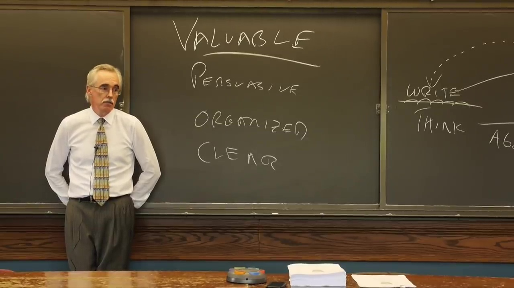

Know the community
Help readers understand better something that they want to understand well.
Professional writing is not conveying your ideas to your readers. It is changing their ideas.
Every community has its own code words that convey value, instability, etc.